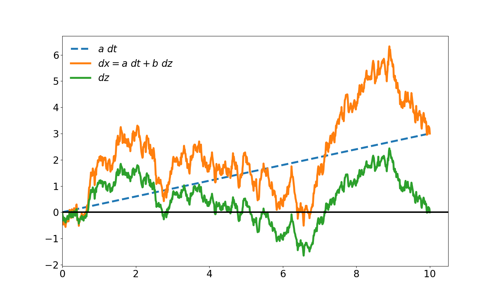

维纳过程与伊藤引理
Contents
维纳过程与伊藤引理#
本节主要参考文献 1 中第12章: Wiener process and Ito’s lemma 的部分内容。
维纳过程#
定义：如果一个变量 \(z\) 满足以下两个性质，我们就称该变量服从 维纳过程 （Wiener process）:
性质一: 变量在一段微小时间 \(\Delta t\) 的变化 \(\Delta z\) 满足：
其中，\(\epsilon \sim \mathcal{N}(0, 1)\) .
性质二: 对于任意两个不同的微小时间段 \(\Delta t\)， \(\Delta z\) 都是相互独立的。
性质二表明一个维纳过程也是一个马尔科夫过程（Markov process 2 ）, 也即关于变量未来的情况只与当前情况有关，而与历史信息无关。
根据性质一，维纳过程的均值、标准差和方差分别为 :
广义维纳过程#
变量 \(x\) 服从广义的维纳过程， 如果
其中 \(a\) , \(b\) 均为常数。
广义维纳过程下， \(\Delta x \sim \mathcal{N}(a\Delta t, b^2\Delta t)\) 。
伊藤过程#
从广义维纳过程推广至更一般的情形， 即为伊藤过程，其定义为，
伊藤引理#
本文主要介绍伊藤第三引理及其应用。
对于满足以下随机偏微分方式的随机过程(即伊藤过程)
那么对于二次可导函数 \(f(t, X_t)\) , 有以下等式成立
备注
伊藤引理在随机微分过程的离散化以及Black-Scholes-Merton偏微分方程的推导中有重要作用。
关于伊藤引理的推导请参考附录。
附录：伊藤引理的推导#
本节整理自维基百科相关页面，详见参考文献 3
\(f(t, X)\) 是关于 \(X\) 的二次可导函数，将其泰勒展开
其中
当 \(dt \rightarrow 0\) 时, \(dt^2\) 项和 \(dtdW_t\) 项相比 \(dW_t^2(\mathcal{O}(dt))\) 更快趋于0， 因此将 \(dt^2\) 项和 \(dtdW_t\) 项设为0， 将 \(dW_t^2\) 项设为 \(dt\) , 可得
参考资料#
- 1
Hull, John C. Options futures and other derivatives, 7th edition. Pearson Education, 2003.
- 2
Markov process, Wikipedia https://en.wikipedia.org/wiki/Markov_chain
- 3
Ito’s lemma, Wikipedia https://en.wikipedia.org/wiki/It%C3%B4%27s_lemma